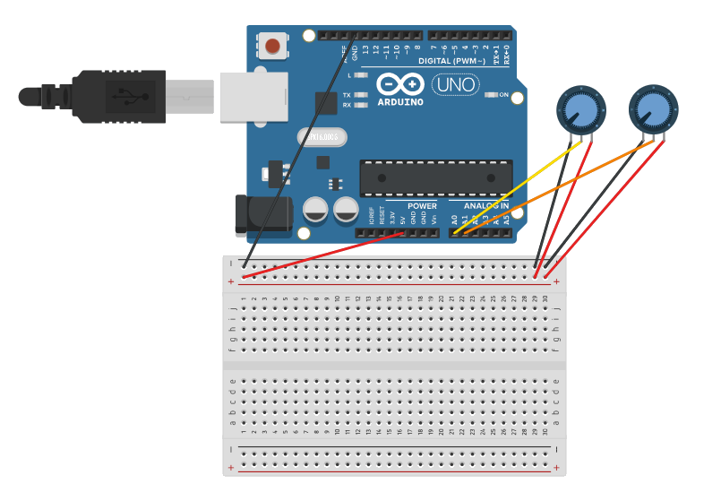
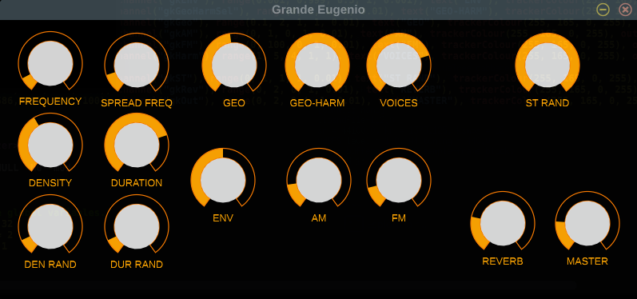

Durante il periodo di natale del 2019, mi venne in mente di costruire un semplice generatore di eventi sonori sintetici con Arduino, Raspberry Pi e Csound da regalare ad Eugenio per il suo pensionamento dal Conservatorio di Pesaro. L'idea alla base è relativa ad uno degli approcci di generazione sonora che Eugenio utilizzava durante le lezioni di Musica Elettronica.
Questi insegnamenti mi hanno sempre affascinato, poiché il potere di generazione in tempo reale era veramente incredibile. L'idea compositiva e creativa molte volte prendeva forma dalla creazione dello strumento stesso.
GrandeEugenio
Lo strumento GrandeEugenio è un generatore di eventi sonori sinusoidali su cui viene applicata un auto-modulazione di ampiezza e di frequenza.
I parametri di constrollo sono:
Densità: numero di eventi al secondo
Durata: durata del singolo evento
Frequenza: controllo delle frequenza dell'oscillatore per ogni evento
Spread Frequenziale: controllo della frequenza in un certo intervallo.
Inviluppo: profilo dinamico di ogni evento
Serie Armonica e Geometrica.
Auto-Modulazione di ampiezza e di frequenza.
REALIZZAZIONE
Progettazione, sviluppo e implementazione di un generatore di eventi sonori (sintetizzatore) in Csound,
installato su Raspberry Pi e controllato con Arduino Mega2560. Il generatore é dedicato ad Eugenio Giordani
e al suo approccio specifico su Csound.
Catena di connessione:
- Controlli Fisici (potenziometri)
- Arduino Mega2560 (programmazione scheda – invio dati di controllo tramite porta seriale USB)
- Raspberry Pi (Macchina)
- Csound (implementazione generatore – lettura dati di controllo tramite porta seriale)
Arduino
Installazione ambiente di sviluppo
ARDUINO IDE.
Porta Seriale
lo scambio di dati avviene tramite porta seriale da Arduino a Csound e viceversa,
anche se questa ultima modalità nel progetto non è utilizzata.
Connessioni e relativo codice - TEST con 2 potenziometri

//TEST ARDUINO POTENZIOMETRI
//KNOB
//Definisce un array di valori corrispondenti ai canali dei knobs connessi ad ardunio
int knobs[] = {0,1};
//Inizializza un array vuoto da riempire con i valori dei knobs
int ValueKnobs[2];
//Inizializza un array vuoto da riempiri con i valori dei knob in ritardo
int ValueKnobsDel[2];
//Inizializza un array vuoto da riempiri con i valori di ValueKnobs - ValueKnobsDel
int ValueKnobsDif[2];
//Inizializza un array vuoto da riempiri con i valori scalati da 0-1023 a 0-200
int ValueOutKnobs[2];
void setup() {
//inizializzo la porta seriale e decido la velocità (9600)
Serial.begin(9600);
}
void loop() {
//KNOB
for (int i = 0; i < 2; i++) {
//I valori di tensione vengono passati all'array ValueKnobs attraverso analogRead
//impostando attraverso knobs[i] i canali analogici di arduino
ValueKnobs[i] = analogRead(knobs[i]);
//differenza tra i valori attuali e valori in ritardo
ValueKnobsDif[i] = abs(ValueKnobs[i] - ValueKnobsDel[i]);
//calcola i valori in ritardo
ValueKnobsDel[i] = ValueKnobs[i];
if (ValueKnobsDif[i] > 0) {
//scala i valori da 0-1023 a 0-200
ValueOutKnobs[i] = map(ValueKnobs[i], 0, 1023, 0, 200);
//aspetta 20 millesimi di secondo
delay(20);
//invia attraverso la porta seriale il "nome del knob"
Serial.write(210 + i);
//invia attraverso la porta seriale i valori tra 0 e 200 del knobs
Serial.write(ValueOutKnobs[i]);
//STAMPA I VALORI SUL MONITOR
Serial.println(210 + i);
Serial.println(ValueOutKnobs[i]);
}
}
Csound
Csound è un linguaggio di programmazione per il suono, è stato originariamente sviluppato da Barry Vercoe nel 1985 presso il MIT Media Lab. Csound è stato tradizionalmente utilizzato in un contesto non interattivo basato su partiture, ma ultimamente è utilizzato principalmente in un contesto in tempo reale.
Csound.
Installazione ambiente di sviluppo Cabbage
Cabbage Audio.
;CODICE TEST CON 2 POTENZIOMENTRI
<CsoundSynthesizer>
<CsOptions>
-odac -d -m0d
</CsOptions>
<CsInstruments>
;inizializza le variabili globali
sr = 44100 ;frequenza di campionamento
ksmps = 128;rapporto tra sr e kr
nchnls = 2 ;numero di canali
0dbfs = 1 ;normalizzazione dell'ampizza
opcode ArduinoSerial, k, kkiiii ;definizione di opcode
kSerial, kValue, ivalue, iChannel,iMin,iMax xin
if(kValue = ivalue)then
if(kSerial != iChannel)then
kControl = kSerial
endif
if(kControl > 190)then
kControl = 190
endif
if(kControl < 5)then
kControl = 0
endif
endif
kControlOut = (kControl / 190) * (iMax - iMin) + iMin
xout kControlOut
endop
instr 1
iPort serialBegin "/dev/cu.usbmodem14201", 9600;Porta Seriale Arduino
kval serialRead iPort
if(kval != -1)then;filtra il valore -1 dal flusso dati porta seriale
kvalPot = kval
endif
if(kvalPot == 210)then ;assegna il canale 210
kval2 = 0
elseif(kvalPot == 211)then; assegna il canale 211
kval2 = 1
endif
gkAmp ArduinoSerial kvalPot, kval2, 0, 210, 0 , 1
gkFreq ArduinoSerial kvalPot, kval2, 1, 211, 50, 500
endin
instr 2
aSig oscili gkAmp, gkFreq
outs aSig, aSig
endin
</CsInstruments>
<CsScore>
;causes Csound to run for about 7000 years...
f0 z
i1 0 -1
i2 0 -1
</CsScore>
</CsoundSynthesizer>
Installazione di Raspberry Pi OS e software necessari
- Installazione Raspberry Pi OS solo desktop
Raspeberry Pi Os Imager.
Guida installazione.
Importante: installare Raspberry Pi OS senza desktop
- primo avvio di raspberry os
Una volta installato il sistema su microSD, al primo avvio dovrebbe chiedere di creare utente e password
- connessione wifi
riavviare il Network Manager
sudo systemctl restart network-manager
con il comando ntmui entriamo nel menù scegliamo la rete wifi e inseriamo la password
ntmui
- installazione csound
sudo apt-get install csound
- installazione tmux
sudo apt-get install tmux
- installazione mc
sudo apt-get install mc
- installazione vim
sudo apt-get install vim
- annullare auteticazione login e password
sudo visudo
cerca la riga
%admin ALL=(ALL) ALL
aggiungi nopasswd, facendola diventare così:
%admin ALL=(ALL) NOPASSWD: ALL
- copiare il codice csound sulla home della microSD
- connettere arduino a raspberry Pi tramite usb
- testare la porta arduino
ls /dev/tty*
- aprire il file csound e cambiare la porta se necessario
solitmente su linux la porta sarà la seguente
iPort serialBegin "/dev/ttyACM0", 9600
- autostart codice csound all'avvio
modificare .bashrc
vim .bashrc
aggiungere le seguenti righe
echo Running at boot
csound NOME.csd
CODICI GRANDE EUGENIO
CODICE ARUDINO GRANDE EUGENIO.
CODICE CSOUND GRANDE EUGENIO per Raspberry Pi OS.
CODICE GRANDE EUGENIO in CABBAGE AUDIO.

ESEMPIO EURORACK (ARDUINO-CSOUND)
CSOUND JOURNALCsound Eurorack Module
Building an FM oscillator in the Eurorack format using Csound, a Raspberry Pi, and an Arduino Uno
Andrew Ikenberry and Jason Lim
aikenberry AT berklee.edu
jhjl AT me.com